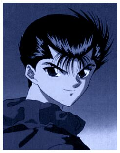
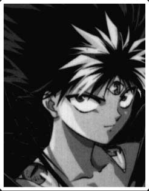
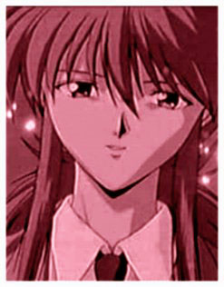
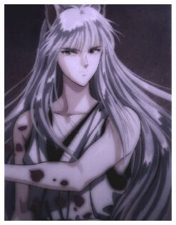
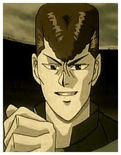

|  | Yusuke is a 14-year-old delinquent. His belligerent tendencies get him into a lot of trouble, especially school teachers when he either falls asleep or skip class entirely. Because of this, he also attracts a lot of gangs to challenge him. Fortunately, he is quite adept to fighting. He died in the beginning of series and then revived with the aid of spiritual agents. His resurrection however, does come with a price. He was requested to be an agent (or psychic detective) representing the living world to investigate and stop any troubles in the demon world. On the surface, he may appear to be a bully who pick fights with everyone, but he really is kind at heart. First of all, he died because he tried to save a young boy from a fatal accident. During the demonic competition he tried to save to lives of the innocent and gave mercy to the opponents he defeated. Just before Genkai passed her "ki" to him, she tested his disposition by asking Yuusuke to kill her. However, he preferred to do without the extra boost rather than killing someone whom had taught him so much. |
|  | Short, arrogant, aloof, cynical, sarcastic, gruff and outwardly cold. He is a fire demon who was born into an ice demon clan. He was cast out as he was considered inferior and not a real demon. He looks like a small young man with black spiky hair. Hiei can also transform into a green-skinned demon with red eyes. His Ja Gan turns purple and evil eyes appear all over his body. In this form, his power increases dramatically. One of his advantages in any battle is his amazing fleetness. As his power increased he began to practice a powerful magical black-dragon-fire attack that almost rendered his right arm useless. Hiei also stole a Ja Gan, an evil eye. It allows him to look for people who are far away. He took it to search for his kidnapped half-sister, Yukina. He won't admit it that however. He won't admit much actually. |
|  | Minamino Shuuichi is a 14-year-old student who lives with his mother, stepfather, and little brother. He goes to an exclusive school which is very well known in Japan. Shuuichi is very intelligent which is why he's often top 1 in his school. He's also very talented, very polite , well-mannered, and very attractive. Most girls in his school are crazy about him and some school clubs are begging him to join their club so that alot of girls/students would join that particular club. But despite of his "good moral character", he also can be very lethal and can kill instantly without hesitating. That is, if someone pushed him to the edge. That is also the reason why Hiei chose him be his partner. |
|  | Youko Kurama is a five-tailed fox demon who was a fugitive from Makai. He was a thief back then, a good one. One day, he was being hunted and he got injured; his situation was very hostile. Fortunately, he found a way to survive. He turned into a spirit and managed to escape from the hunters. His spirit flew to Ningenkai and managed to possess the body of an unborn child in a woman's womb. When the child was born, he was given the name Shuichi Minamino and was loved and cherished by his mother, Shiori. Shiori's husband died shortly after Shuichi was born. His true purpose of staying in Ningenkai was to recover his strength for mostly 10 years. But 15 years had passed and still, he's still with Shiori. He can't bear to leave his human mother after all she had done for him. Shuichi stayed and took care of her especially in times when she needs him. |
|  | Kuwabara is Yusuke's best friend and former rival. He's not actually an official rei kai detective, he's only helping Yusuke accomplish his missions. He often challenges Yusuke to a fight eventhough he always ends up beaten down. Kuwabara is also brave ; bravest of all Yusuke's foes in his school. Actually, Kuwabara seems to be the second strongest person in their school. Yusuke just kept him second. He also had a lot of gangster foes who came from different schools. When Yusuke died, he came to his burial shouting that they both still have a score to settle so he shouldn't have died. He wept afterwards because ,somehow, Yusuke has been a part of his life. |